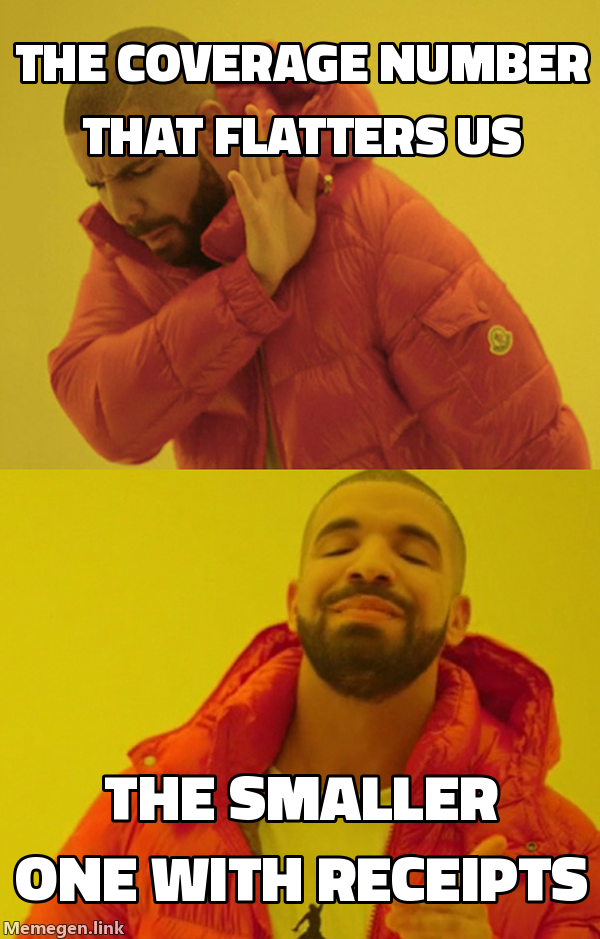

The Testing Command Center is the browsable site that shows a project's features, tests, coverage, and releases in one place. The thing to hold onto — the claim the whole verification-first model rests on — is that it is not a document anyone writes. It is a derived view of the lifecycle's execution. Ship a feature and the center recounts itself from git, the test corpus, and the plan; nobody hand-updates a page.
01Built separately, never hosted here
One boundary matters before anything else. The command center is a different site from this documentation site:
- This docs site (
docs/site/) is prose about the suite — the pages you're reading now. Markdown is its source of truth. - The command center (
docs/site/center/) is a machine-truth build about one project's features and tests. Its source of truth is git, junit, coverage, and the.kdbp/state — never hand-authored HTML.
They are never mixed. This page describes the command center; it does not host it. The center is generated per project by its own skills, from that project's own machine sources.
02The subject spine
The center is one subject spine — seven stations plus a leaf for external reports — read top to bottom:
flowchart TD NOW["Now<br>present: feed · needs-you · freshness"] BOARD["Board<br>the rail: red → exec → review → commit → push"] ENT["Entities<br>the subjects the software is about"] DOCS["Docs<br>per feature: handle · what & why · flows · decided"] TEST["Testing<br>the C-id matrix + walk-fed manual angles"] LED["Ledger<br>per change — ephemeral, 100% derived"] REL["Releases<br>shots + diagrams per shipped version"] LEAF["Leaf<br>OSS / external reports — linked, never rebuilt"] NOW --> BOARD --> ENT --> DOCS --> TEST --> LED --> REL --> LEAF
Each station answers a different question a person actually asks: what needs me right now (Now), where is everything in the pipeline (Board), what is this software about (Entities), what does feature X do and why (Docs), what has actually been seen to work or fail (Testing), what changed in this one change (Ledger), what shipped (Releases).
03The whole chain, mapped
The spine above is the vertical skeleton. The real payoff is seeing how one sidebar item connects all the way through to the commands that produce it. The map below traces it end to end — the nav as a project renders it today → the center's sections → the files execution writes → the suite commands that write them — colour-coded by beat, with a gap table underneath that prices every mismatch between the nav and the ruled structure.
Open the interactive map → to pin any node and trace its full chain: pin PLAN.md · PLAN.json to see the six writers a guard hook verifies (dashed crimson = it blocks a ✓ whose proof doesn't exist, D7), pin walks.jsonl to watch one file feed manual angles and adopt's approval reads, pin the A3 generator for the build's whole footprint. It traces the structure over one project's real data — the shape is what generalizes.
04Two axes: entity × altitude
The spine is read along two axes at once. Entity is horizontal — which subject (Transaction, Account, …). Altitude is vertical — docs sit high (the human-facing "what & why"), tests sit low (the machine-facing "what was proven"). They are two lenses on the same subject at different altitudes, and they meet at the feature card: one feature's doc page and its test page are the same subject seen from two heights. Time — past, present, future — is an overlay on this grid, never a fourth wing.
05The accumulator / ephemeral split, and the two clocks
Not every page ages the same way, and the split is deliberate:
- Accumulator pages accrue over a feature's life — the docs page for a feature and its testing page gather handle, flows, decisions, automated angles, walk-fed manual angles, and a verification changelog as the feature matures.
- Ephemeral pages are 100% derived and disposable — a ledger page for one change is rebuilt from git every refresh and owes nothing to memory.
That's the two clocks from the verification-first model made concrete: the present is replaced on every refresh (so it can't drift), while the past accrues in git (so it's never hand-kept). The testing station is the clearest example — its matrix is one row per test:
| Case | Ever red? | Status | Source | Last run |
|---|---|---|---|---|
C147 | ✅ born red | pass | unit | this build |
C201 | ✅ born red | fail | integration | this build |
C088 | — backfilled | pass | unit | this build |
Ever-red is the honesty column: a case that was born through /gabe-red carries proof it once failed on purpose; a case backfilled with a C-id after the fact gets the id but its ever-red stays honestly empty. Nothing here is typed by a human — every cell is stitched from junit and the RED: trailers by C-id.
06Where the facts come from — and what is never stored
Three machine spines feed the center, and one thin seam of authored prose translates them:
- git — commits,
RED:/Cases:trailers, and lens briefs. - the C-id'd corpus — every test, its identity, and (via junit) its status.
.kdbp/— the authored project state: SCOPE, PLAN, PENDING, walks.jsonl, DECISIONS, and the rest.- center inputs — the only prose the center holds:
center.config.json, the feature cards, and proof manifests. Authored artifacts only translate; they never assert a count.
Ledger pages, changelogs, regression relationships, the ever-red column, scope joins, and the non-phase lane are never written to disk — they are recomputed on every build. Storing any of them would violate the anti-bloat law and invite drift. (See the four laws.)

07Flow coverage — the golden path, proven or loudly not
Each entity card carries a # FLOWS section — one line per user-visible flow, ` - <key> [★] → <description> , with a single ★ marking the **golden path**. Every proof set's manifest may declare role: (principal | edge | reference | supporting) and flows: (the card keys it walks). The build joins the two into a per-entity verdict that renders on the Evidence tab and rides archmap.json as a machine-readable coverage` block — covered/total, golden covered/total, and the unproven keys by name, so agents read numbers, never scrape HTML. |
|---|
The honesty rules do the real work:
- Explicit beats inference. With no manifest signal the build may infer a match from the set's identity text — but the topline says how many covered flows rest on inference alone ("confirm with
flows:"), and each rides the ledger as an XS confirm-move. - A malformed signal is never guessed over. A typo'd role, a
flows:that isn't a list, a key the card doesn't have — the set renders unclassified with its reason and feeds a clarify move. Guessing over a broken declaration is how a reference set becomes golden coverage. - A reference set never covers. What the screen was built to match is not proof of the workflow.
- A malformed
FLOWSline surfaces — build warning, coverage-note count, ledger move — never a silent drop: a shrunken denominator lies about the card. - An unproven
★is the loudest gap on the shelf — a placeholder row where the proof will live, plus a Pending move reading "GOLDEN PATH — no proof".
The first real run proved the design: when explicit flows: landed on gastify's manifests, transaction's coverage went down — 6/9 to 4/9 — because two flows had been "covered" only by token-noise inference (one of them matched the literal text "no delete"). The lower number is the true one, and the center now says so itself.

08The insight lenses — data model and functions
The Code tab runs two scoped lenses in one dialect: the DATA-MODEL lens (every documented class) and the FUNCTIONS lens (every def in the mapped backend files). Each renders the same way — icon tags on the name cell, filter chips (base · ≈similar · orphan · god), a two-bar usage cell (api = endpoint touches + FK in · internal = mapped files referencing), a titled row detail (usage receipts as tables, calls, signature/structure), and a first-class candidates section where the machine names merge / deprecation / split candidates and judgment rules them. The signals ride archmap.json as model_insight and function_insight — computed in the same build pass off the same cached parses, no extra step, no authored input.
Three honesty rules carry the lenses:
- Two bars, because one lies. A class or function with zero endpoint touches can still be load-bearing service vocabulary — the violet internal bar is why only a true orphan (zero on both axes) reads as dead.
- References are directional and navigable. Where a class meets a function, the link says
in,out, orin·out(parameter vs return annotation); cross-entity references resolve to the owner's page wearing its entity icon + name, and a pending entity's references park at the entity index until its page exists. - Undocumented app types surface as debt. A CamelCase type that is app-internal by import but documented in no entity's map renders a dashed
tbdpending link, and the crawl gate sweeps every page and warns with per-page counts — the exact work-list the next/gabe-cc-initsection retires.
The lens dialect is deliberately member-kind-generic: functions and classes today, methods or endpoints-as-members tomorrow — each as its own scoped table, never mixed.
09Getting a center onto a project
Two skills feed the center from opposite ends, and a third reads it:
/gabe-cc-updateis the forward track: each shipped feature is translated into its card, diagrams, and evidence narration over the machine facts, and the center regenerates green./gabe-cc-initis the brownfield on-ramp for a project that already has code but no center. It archives existing docs — never deletes them — and bootstraps the center from suite templates, then machine-ranks a critical/high shortlist for the operator, and ingests one entity per run at human speed, with each approval recorded as a walk. The adoption tracker lives outsidePLAN.md, so the main plan keeps shipping features through the normal loop while adoption proceeds on its own track — the two meet in the same center. (This is decision R7.)/gabe-cc-entityis the reader: it assembles one entity's slice — its code map, registry, and bindings — into a context pack from the center's committed data, without re-reading the codebase.
- The one picture & the four laws — the model this page is the flagship instance of.
- The C-id scheme — the identity that makes the test matrix stitchable.
- Design decisions — D2 (the walk witness feeding manual angles), D3 (release-page media), and R7 (
/gabe-cc-init).
This page references
Derived from the page's own text on every build — no link table is maintained, and a reference that stops resolving stops appearing.